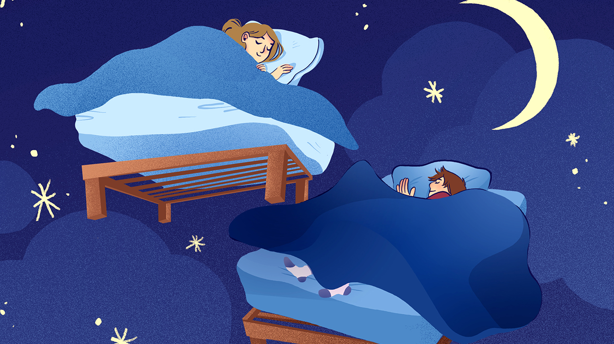

By Kay's Holisitc Services, 17 January,2020
What is natural sleep?
Natural sleep is a naturally recurring state of mind and body, characterized by altered consciousness, relatively inhibited sensory activity, reduced muscle activity and inhibition of nearly all voluntary muscles during rapid eye movement (REM) sleep, and reduced interactions with surroundings.
Before you rush to the drugstore to buy over-the-counter sleep medication, try one of the following natural sleep remedies.
They are safer and have fewer side effects. Many of these can not only help you fall asleep and stay asleep,
but they can also promote muscle relaxation.
Magnesium and calcium
Magnesium and calcium are both sleep boosters,
and when taken together they become even more effective. Plus, by taking magnesium
you cancel out any potential heart problems that might arise from taking calcium alone.
Take 200 milligrams of magnesium (you can lower the dose if it causes diarrhea) and 600 milligrams of calcium each night.
Wild Lettuce
If you’ve suffered anxiety, headaches, or muscle or joint pain, you might already be familiar with wild lettuce.
It’s also effective at calming restlessness and reducing anxiety, and may even quell restless legs syndrome.
When using a wild-lettuce supplement, take 30 to 120 milligrams before bed.
Hops
Beer fans are already familiar with the calming effect of hops, the female flowers used in beer making.
For sleep purposes, this extract has been widely used as a mild sedative for anxiety and insomnia.
Take 30 to 120 milligrams before climbing under the covers.
Aromatherapy
Lavender is the trick here, as studies have proven that it aids in sleep.
It’s also an inexpensive, nontoxic way to slip into a peaceful slumber.
Find a spray with real lavender and spritz it on your pillow before bedtime, or buy a lavender-filled pillow.
Melatonin
Melatonin is the hormone that controls sleep, so it’s no wonder that it naturally induces sleep.
Studies show that lower doses are more effective — plus, there’
s concern that too-high doses could cause toxicity as well as raise the risk of depression or infertility.
Yoga and Meditation
Choose gentle yoga or stretching, not vigorous power or ashtanga yoga, which could energize you instead.
Try easy yoga stretches in bed followed by simple meditation. Close your eyes and, for 5 to 10 minutes,
pay attention to nothing but your breathing.
L-theanine
This amino acid comes from green tea, and not only helps maintain a calm alertness during the day but also a deeper sleep at night.
However, green tea doesn’t contain enough L-theanine to significantly boost your REM cycles, and might make you wake up
to go to the bathroom. Instead, buy pure, active L-theanine (some brands have inactive forms of theanine that block the
effectiveness), and take 50 to 200 milligrams at bedtime.
Valerian
Valerian is one of the most common sleep remedies for insomnia.
Numerous studies have found that valerian improves deep sleep, speed of falling asleep, and overall quality of sleep.
However, it’s most effective when used over a longer period of time. Keep in mind that about 10 percent of the
people who use it actually feel energized, which may keep them awake. If that happens to you, take valerian during the day.
Otherwise, take 200 to 800 milligrams before bed.